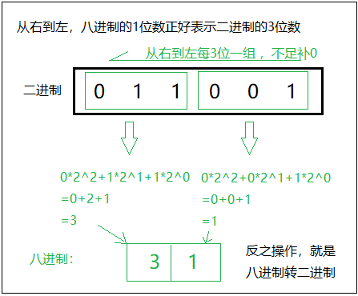
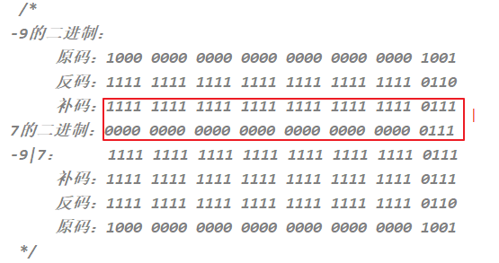

JavaSE_第2章【Java基础语法】
学习目标
-
会使用单行注释和多行注释
-
能够辨识关键字
-
理解标识符的含义
-
理解Java中的基本数据类型分类
-
能够理解常量的概念
-
能够定义8种基本数据集类型的变量
-
能够分清楚两种输出语句的区别
-
了解进制
-
理解基本数据类型的自动类型转换
-
理解基本数据类型的强制类型转换
-
了解ASCII编码表和Unicode编码表
-
理解int类型和char类型的运算原理
-
理解运算符++ --的运算方式
-
理解+符号在字符串中的作用
-
掌握算术运算符
-
掌握赋值运算符
-
掌握比较运算符
-
理解逻辑运算符
-
掌握三元运算符的格式和计算结果
-
了解位运算符
2.1 注释（annotation）
注释：就是对代码的解释和说明。其目的是让人们能够更加轻松地了解代码。为代码添加注释，是十分必须要的，它不影响程序的编译和运行。
Java中有
单行注释、多行注释和文档注释单行注释以
//开头，以换行结束，格式如下：// 注释内容多行注释以
/*开头，以*/结束，格式如下：xxxxxxxxxx/*注释内容注释内容*/文档注释以
/**开头，以*/结束xxxxxxxxxx/**注释内容@author 可指定 java java程序的作者@version 可指定源文件的版本*/文档注释可以被JDK提供的javadoc工具解析生成一套网页形式的说明文档，操作入下：
xxxxxxxxxxD:\>javadoc -d mydoc -author -version Hello.java
2.2 关键字（keyword）
什么是关键字：被java语言赋予了特殊含义的字符串（单词）。
例如HelloWorld案例中，出现的关键字有
public、class、static、void等，这些单词已经被Java定义，具有明确的含义。关键字的特点：全部都是
小写字母。Java有哪些关键字：

关键字一共50个，其中const和goto是保留字。
true,false,null看起来像关键字，但从技术角度，它们是特殊的布尔值和空值。
建议：关键字比较多，不需要死记硬背，学到哪里记到哪里即可。
2.3 标识符( identifier)
标识符概念：即给类、变量、方法、包等命名的字符序列，称为标识符。
简单的说，凡是程序员自己命名的部分都可以称为标识符。
标识符的命名规则（必须遵守）
（1）组成：英文大小写字母，数字，下划线_，美元符号$
（2）数字不能开头
（3）严格区分大小写
（4）不能使用Java的关键字（包含保留字）和特殊值
标识符的命名规范（遭受鄙视）
（1）见名知意
（2）类名、接口名等：每个单词的首字母都大写（大驼峰法则），形式：XxxYyyZzz，
例如：HelloWorld，String，System等
（3）变量、方法名等：从第二个单词开始首字母大写（小驼峰法则），其余字母小写，形式：xxxYyyZzz，
例如：age,name,bookName,main
（4）包名等：每一个单词都小写，单词之间使用点.分割，形式：xxx.yyy.zzz，
例如：java.lang
（5）常量名等：每一个单词都大写，单词之间使用下划线_分割，形式：XXX_YYY_ZZZ，
例如：MAX_VALUE,PI
练习：以下合法的标识符是？
flag_3 my code discount% 234rate $name println
main
2.4 常量（constant）
常量概念：在程序执行的过程中，其值不可以发生改变的量。例如 π的值3.1415926
常量的分类：
自定义常量：通过final关键字定义（后面在面向对象部分讲解）
字面值常量：
字面值常量 举例 字符串常量 "HelloWorld" 整数常量 12，-23 浮点常量 12.34 字符常量 'a'，'A'，'0'，'好' 布尔常量 true，false 空常量 null xxxxxxxxxxpublic class ConstantDemo {public static void main(String[] args) {//字符串常量System.out.println("HelloWorld");//整数常量System.out.println(12);System.out.println(-23);//小数常量System.out.println(12.34);//字符常量System.out.println('a');System.out.println('A');System.out.println('0');//布尔常量System.out.println(true);System.out.println(false);}}注意事项：
字符常量，单引号里面有且仅有一个字符
空常量，不可以在输出语句中直接打印
2.5 输出语句
换行输出语句：输出内容，完毕后进行换行，格式如下：
xxxxxxxxxxSystem.out.println(输出内容);直接输出语句：输出内容，完毕后不做任何处理，格式如下
xxxxxxxxxxSystem.out.print(输出内容);
示例代码：
x对比如下两组代码：System.out.println("tom");System.out.println(18);System.out.print("jack");System.out.print(19);//--------------------------System.out.println("jack"+19);//jack19System.out.println(100+19+"jack");//119jack
注意事项：
换行输出语句，括号内可以什么都不写，只做换行处理
直接输出语句，括号内什么都不写的话，编译报错
不能同时输出多个数据，可以使用 + 把多个数据连接起来，变成为一个数据进行输出。
2.6 变量（variable）
变量的概念:
在程序执行的过程中，其值可以发生改变的量
变量的作用:
用来存储数据，代表内存的一块存储区域，这块内存中的值是可以改变的。

定义格式：
声明变量，并同时赋值
数据类型 变量名=初始化值；
//声明并同时赋值，存储一个整数的年龄 int age = 18; //打印输出变量值 System.out.println("age = " + age);//+号表示连接符，把""中的字符串与变量age中的数据连接进行输出数据类型 变量名;
变量名=初始值；
//先声明，再赋值 int age; age=18; //打印输出变量值 System.out.println("age = " + age);//18//变量可以重新赋值 age=19; System.out.println("age = " + age);//19数据类型 变量名1=初始值，变量名2=初始值；
//声明多个变量并同时赋值 int a=11,b=22; //或者先声明再赋值 int c,d; c=33; d=44;
变量的使用注意事项
先声明后使用
如果没有声明，会报“找不到符号”错误
在使用之前必须初始化
如果没有初始化，会报“未初始化”错误
变量有作用域
作用域为变量直接所属的{}范围内，如果超过作用域，也会报“找不到符号”错误
在同一个作用域中不能重名
同一个{}，不能同时声明两个同名变量
2.7 计算机如何存储数据
计算机世界中只有二进制。那么在计算机中存储和运算的所有数据都要转为二进制。包括数字、字符、图片、声音、视频等。
2.7.1 进制（了解）
进制分类与表示方式
（1）十进制： 数字组成：0-9 进位规则：逢十进一
System.out.println(10);//10表示十进制的10，输出十进制结果10
（2）二进制： 数字组成：0-1 进位规则：逢二进一
表示方式：以0b或0B开头
System.out.println(0B10);//0B10表示二进制的10，输出十进制结果2
十进制的256，二进制：100000000，为了缩短二进制的表示，又要贴近二进制，在程序中引入八进制和十六进制
（3）八进制：很少使用 数字组成：0-7 进位规则：逢八进一
表示方式：以0开头
System.out.println(010);//010表示八进制的10，输出十进制结果8
与二进制换算规则：每三位二进制是一位八进制值
（4）十六进制 数字组成：0-9，a-f或A-F 进位规则：逢十六进一
表示方式：以0x或0X开头
System.out.println(0X10);//0x10表示十六进制的10，输出十进制结果16
与二进制换算规则：每四位二进制是一位十六进制值
进制的转换
十进制 二进制 八进制 十六进制 0 0 0 0 1 1 1 1 2 10 2 2 3 11 3 3 4 100 4 4 5 101 5 5 6 110 6 6 7 111 7 7 8 1000 10 8 9 1001 11 9 10 1010 12 a或A 11 1011 13 b或B 12 1100 14 c或C 13 1101 15 d或D 14 1110 16 e或E 15 1111 17 f或F 16 10000 20 10
任意进制转十进制
十进制的本质：123=1*10^2+2*10^1+3*10^0
系数：就是每一个位上的数值。上例中的1,2,3 基数：x进制的基数就是x。上例中的10 权：对每一个位上的数据，从右到左，并且从0开始编号，对应的编号就是该数据的权。上例中的0,1,2
任意进制转十进制：系数*基数^权次幂之和。
十进制转任意进制：
十进制数除以基数取余，直到商为0，余数反转。
十进制转二进制：十进制整数6除以基数2，倒序取余数，结果为二进制数110

快速转换方法：
二进制转十进制：
8421码：从右边开始依次是2的0次，2的1次，2的2次。。。。
二进制数据转八进制数据
从右边开始，3位二进制对应1位八进制

二进制数据转十六进制数据
从右边开始，4位二进制对应1位十六进制
2.7.2 计算机存储单位
位（bit）：是数据存储的最小单位，也就是一个二进制位。其中8 bit 就称为1个字节(Byte)。
字节（Byte）：是计算机信息技术用于计量存储容量的一种计量单位，1字节等于8bit。
转换关系：
- 8 bit = 1 Byte
- 1024 Byte = 1 KB
- 1024 KB = 1 MB
- 1024 MB = 1 GB
- 1024 GB = 1 TB
2.7.3 二进制数据存储
计算机底层都是使用二进制进行数据的存储的。不同类型的数据，存储方式也有不同。
整数存储
计算机底层存储整数并不是把整数转换为二进制直接存储，而是以二进制的补码形式进行存储。要了解补码还有知道原码和反码：
原码：把十进制转为二进制，然后最高位设置为符号位，1是负数，0是正数。
反码：正整数的反码与原码相同，负整数的反码在原码的基础上，符号位不变，其余位取反（0变1,1变0）
补码：正整数的补码与原码相同，负整数的补码为其反码+1
例如：用1个字节的二进制表示一个数 // 25 ==> 原码 0001 1001 ==> 反码 0001 1001 -->补码 0001 1001 -25 ==>原码 1001 1001 ==> 反码1110 0110 ==>补码 1110 0111
一个字节可以存储的整数范围
分为两种情况：
（1）无符号：不考虑正负数
0000 0000 ~ 1111 1111 ==> 0~255
（2）有符号：-128~127
0000 0000 ~ 0111 111 ==> 0~127
1000 0001 ~ 1111 1111 ==> -127 ~ -1 （补码形式存储）
1000 0000 ==> -128 特殊值，最高位既是符号位，又是数值位
如何存储小数（了解）
- 为什么float（4个字节）比long（8个字节）的存储范围大？
- 为什么double（8个字节）比float（4个字节）精度范围大？
- 为什么float和double不精确
因为float、double底层也是二进制，先把小数转为二进制，然后把二进制表示为科学记数法，然后只保存：
①符号位②指数位③尾数位

如何存储字符
在计算机的内部都是二进制的0、1数据，如何让计算机可以直接识别人类文字的问题呢？就产生出了编码表的概念。
编码表
就是将人类的文字和一个十进制数进行对应起来组成一张表格。例如：
字符 十进制数值 二进制数值 0 48 0011 0000 A 65 0100 0001 a 97 0110 0001 将所有的英文字母，数字，符号都和十进制进行了对应，因此产生了世界上第一张编码表ASCII（American Standard Code for Information Interchange 美国标准信息交换码）。
Unicode(统一码、万国码、单一码)是计算机科学领域里的一项业界标准，包括字符集、编码方案等。Unicode 是为了解决传统的字符编码方案的局限而产生的，它为每种语言中的每个字符设定了统一并且唯一的二进制编码，以满足跨语言、跨平台进行文本转换、处理的要求。
Java中使用的字符集：Unicode编码集
unicode使用2个字节存储一个字符，对于大量的英文字符（1个字节可以存储），无疑是浪费空间的，所以出现了UTF-8、UTF-16编码规则，UTF-8是以8位为一个编码单位的可变长编码规则。这时：
英文字符：还是按照ASCII码表对应的数字进行存储（1个字节）
中文字符：通常需要3个字节来存储
Java中字符常量的几种表示方式
（1）'一个字符'
例如：'A'，'0'，'尚'
（2）转义字符
\n：换行 \r：回车 \t：Tab键 \\：\ \"：" \'：' \b：删除键Backspace System.out.println('\\'); System.out.println("hello\tworld\njava");（3）\u字符的Unicode编码值的十六进制型
例如：'\u5C1A'代表'尚'
char c = '\u5C1A'; char c = '尚'; String s = '尚';//错误的，哪怕是一个字符，也要使用双引号 char c2 = '';//错误，单引号中有且只能有一个字符 String s2 = "";//可以，双引号中可以没有其他字符，表示是空字符串
（4）直接给char类型变量赋值十进制的0~65535之间的Unicode编码值
例如：'尚' 的编码值是23578
'a'的编码值是97
char c1 = 23578; System.out.println(c1);//尚 char c2 = 97; System.out.println(c2);//a
2.8 数据类型(data type)
2.8.1 数据类型分类
Java是一种强类型的语言，针对每一种数据都定义了数据类型，不同类型的数据二进制表示方式或分配的空间大小有所不同，java数据类型主要分为两大类：（定义变量需要确定数据类型，即确定数据使用的空间大小和二进制表示形式）
- 基本数据类型：包括
整数、浮点数、字符、布尔。 - 引用数据类型：包括
类、数组、接口。
2.8.2 基本数据类型
四类八种基本数据类型：

Java中的默认类型：整数类型是
int、浮点类型是double。
常量整数值都是int类型，占用4个字节空间。
程序运行期间byte、short、char、boolean实际都是占用4个字节内存空间， 但在逻辑上： byte只有低8位有效空间。 short只有低16位有效空间。 所以，可以直接把一个byte范围内的整数常量值直接赋给byte类型变量。short同理。byte b=10; 赋值给int，只要在int范围即可。 赋值给long，在int范围内的，可以加也可以不用加L，会自动升级为long，如果数字超过int范围，必须加L。
小数常量值，无论多少，不加F，就是double类型。
2.8.3 基本数据类型的存储范围
（1）byte：字节类型
占内存：1个字节
存储范围：-128~127
byte b=10;
byte b1=128//编译失败: 不兼容的类型: 从int转换到byte可能会有损失
（2）short：短整型类型
占内存：2个字节
存储范围：-32768~32767
short s=10;
short s1=32768//编译失败: 不兼容的类型: 从int转换到short可能会有损失
（3）int：整型
占内存：4个字节
存储范围：-2的31次方 ~ 2的31次方-1
int i=10;
int i1=12345678900;//编译错误: 过大的整数: 12345678900
（4）long：整型
占内存：8个字节
存储范围：-2的63次方 ~ 2的63次方-1
long j=10;
long j1=12345678900L;
注意：如果要表示某个超过int范围的常量整数它是long类型，那么需要在数字后面加L
（1）float：单精度浮点型
占内存：4个字节
精度：科学记数法的小数点后6~7位
注意：如果要表示某个常量小数是float类型，那么需要在数字后面加F或f，否则就是double类型
（2）double：双精度浮点型
占内存：8个字节
精度：科学记数法的小数点后15~16位
float f = 12.3F;//右边如果赋值小数常量值，那么必须加F或f
double d = 12.3;
boolean：只能存储true或false
虽然计算机底层使用0和1表示false和true，但是在代码中不能给boolean类型的变量赋值0和1，只能赋值false和true
2.9 基本数据类型转换（Conversion）
在Java程序中，不同的基本数据类型的值经常需要进行相互转换。Java语言所提供的七种数值类型之间可以相互转换，基本数据类型转换有两种转换方式：自动类型转换和强制类型转换。
2.9.1 自动类型转换
将取值范围小的类型自动提升为取值范围大的类型 。
基本数据类型按照取值范围从小到大的关系，如图所示：

以下情况会发生自动类型转换（隐式类型转换）：
- 当把存储范围小的值（常量值、变量的值、表达式计算的结果值）赋值给了存储范围大的变量时，
int i = 'A';//char自动升级为int
double d = 10;//int自动升级为double
- 当存储范围小的数据类型与存储范围大的数据类型一起混合运算时，会按照其中最大的类型运算
int i = 1;
byte b = 1;
double d = 1.0;
double sum = i + b + d;//混合运算，升级为double
- 当byte,short,char数据类型进行算术运算时，按照int类型处理
byte b1 = 1;
byte b2 = 2;
byte b3 = b1 + b2;//编译报错，b1 + b2自动升级为int
char c1 = '0';
char c2 = 'A';
System.out.println(c1 + c2);//113
boolean类型不参与
2.9.2 强制类型转换
将取值范围大的类型转换成取值范围小的类型时需要进行强制（显示）类型转换。
例如：将小数1.5 赋值到int 类型变量会发生什么？产生编译失败，肯定无法赋值。
int i = 1.5; // 错误
想要赋值成功，只有通过强制类型转换，将double 类型强制转换成int 类型才能赋值。
转换格式：
数据类型 变量名 = （数据类型）被强转数据值；
（1）当把存储范围大的值（常量值、变量的值、表达式计算的结果值）赋值给了存储范围小的变量时，需要强制类型转换，提示：有风险，可能会损失精度或溢出
int i = (int)3.14;//强制类型转换，损失精度
double d = 1.2;
int num = (int)d;//损失精度
int i = 200;
byte b = (byte)i;//溢出
（2）当某个值想要提升数据类型时，也可以使用强制类型转换
int i = 1;
int j = 2;
double shang = (double)i/j;
提示：这个情况的强制类型转换是没有风险的。
2.9.3 特殊的数据类型转换
任意数据类型的数据与String类型进行“+”运算时，结果一定是String类型
System.out.println("" + 1 + 2);//12
练习
1、练习题：判断如下代码是否编译通过，如果能，结果是多少？
short s1 = 120;
short s2 = 8;
short s3 = s1 + s2;
2、练习题：判断如下代码是否编译通过，如果能，结果是多少？
short s1 = 120;
short s2 = 8;
byte s3 = (byte)(s1 + s2);
3、练习题：判断如下代码是否编译通过，如果能，结果是多少？
char c1 = '0';
char c2 = '1';
char c3 = c1 + c2;
4、练习题：判断如下代码是否编译通过，如果能，结果是多少？
char c1 = '0';
char c2 = '1';
System.out.println(c1 + c2);
5、练习题：判断如下代码是否编译通过，如果能，结果是多少？
int i = 4;
long j = 120; //因为右边120默认是int类型，int的值赋值给long类型是可以的，会自动类型转换，但是要求这个int值不能超过int的存储范围，如果超过int的存储范围必须加L.
double d = 34;
float f = 1.2f;//因为右边1.2默认是double类型，double的值是不能直接赋值给float的，要么加F要么使用强制类型转换。
System.out.println(i + j + d + f);//最后是double
6、练习题：判断如下代码是否编译通过，如果能，结果是多少？
int i = 1;
int j = 2;
double d = i/j;
System.out.println(d);
2.10 运算符（Operator）
- 运算符：是一种特殊的符号，用以表示数据的运算、赋值和比较等。
- 表达式：用运算符连接起来的式子
2.10.1 运算符的分类
按照功能划分：
分类 运算符 算术运算符 +、-、*、/、%、++、--赋值运算符 =、+=、-=、*=、/=、%=等关系运算符 >、>=、<、<=、==、!=逻辑运算符 &、|、^、!、&&、||条件运算符 (条件表达式)?结果1:结果2；位运算符（了解） &、|、~、^、<<、>>、>>>按照操作数个数划分：
分类 运算符 例子 一元（单目）运算符 ++、--、！ i++、--i 二元（双目）运算符 +、-、*、/、%、>、<=等 a+b、10>=9 三元（三目）运算符 表达式1?表达式2:表达式3 age>=18?"成年":"未成年"
2.10.2 算术运算符
| 算术运算符 | 符号解释 |
|---|---|
+ |
加法运算，字符串连接运算，正号 |
- |
减法运算，负号 |
* |
乘法运算 |
/ |
除法运算，整数/整数结果还是整数 |
% |
求余运算，余数的符号只看被除数 |
++ 、 -- |
自增自减运算 |
加、减、乘、除、模
public class OperatorDemo01 { public static void main(String[] args) { int a = 3; int b = 4; System.out.println(a + b);// 7 System.out.println(a - b);// -1 System.out.println(a * b);// 12 System.out.println(a / b);// 计算机结果是0，为什么不是0.75呢？ System.out.println(a % b);// 3 System.out.println(5%2);//1 System.out.println(5%-2);//1 System.out.println(-5%2);//-1 System.out.println(-5%-2);//-1 //商*除数 + 余数 = 被除数 //5%-2 ==>商是-2，余数时1 (-2)*(-2)+1 = 5 //-5%2 ==>商是-2，余数是-1 (-2)*2+(-1) = -4-1=-5 } }“+”号的两种用法
第一种：对于
+两边都是数值的话，+就是加法的意思第二种：对于
+两边至少有一边是字符串得话，+就是拼接的意思public class OperatorDemo02 { public static void main(String[] args) { // 字符串类型的变量基本使用 // 数据类型 变量名称 = 数据值; String str1 = "Hello"; System.out.println(str1); // Hello System.out.println("Hello" + "World"); // HelloWorld String str2 = "Java"; // String + int --> String System.out.println(str2 + 520); // Java520 // String + int + int // String + int // String System.out.println(str2 + 5 + 20); // Java520 } }
自加自减运算
理解：
++运算，变量自己的值加1。反之，--运算，变量自己的值减少1，用法与++一致。单独使用
变量在单独运算的时候，变量
前++和变量后++，变量的是一样的；变量
前++：例如++a。变量
后++：例如a++。public class OperatorDemo3 { public static void main(String[] args) { // 定义一个int类型的变量a int a = 3; //++a; a++; // 无论是变量前++还是变量后++，结果都是4 System.out.println(a); } }
复合使用
和
其他变量放在一起使用或者和输出语句放在一起使用，前++和后++就产生了不同。变量
前++：变量先自身加1，然后再取值。变量
后++：变量先取值，然后再自身加1。public class OperatorDemo03 { public static void main(String[] args) { // 其他变量放在一起使用 int x = 3; //int y = ++x; // y的值是4，x的值是4， int y = x++; // y的值是3，x的值是4 System.out.println(x); System.out.println(y); System.out.println("=========="); // 和输出语句一起 int z = 5; //System.out.println(++z);// 输出结果是6，z的值也是6 System.out.println(z++);// 输出结果是5，z的值是6 System.out.println(z); int a = 1; a = a++;//(1)先取a的值“1”放操作数栈(2)a再自增,a=2(3)再把操作数栈中的"1"赋值给a,a=1 int i = 1; int j = i++ + ++i * i++; /* 从左往右加载 (1)先算i++ ①取i的值“1”放操作数栈 ②i再自增 i=2 （2）再算++i ①i先自增 i=3 ②再取i的值“3”放操作数栈 （3）再算i++ ①取i的值“3”放操作数栈 ②i再自增 i=4 （4）先算乘法 用操作数栈中3 * 3 = 9，并把9压会操作数栈 （5）再算求和 用操作数栈中的 1 + 9 = 10 （6）最后算赋值 j = 10 */ } }
小结：
- ++在前，先自加，后使用；
- ++在后，先使用，后自加。
练习
（1）获取一个四位数的个位，十位，百位，千位
public class Test01 { public static void main (String [] args) { //1.定义一个四位数，例如1234 int num = 1234; //2.通过运算操作求出个位，十位，百位，千位 int ge = ？ int shi = ？ int bai = ？ int qian = ？ System.out.println(num + "这个四位数个位上的数字是：" + ge); System.out.println(num + "这个四位数十位上的数字是：" + shi); System.out.println(num + "这个四位数百位上的数字是：" + bai); System.out.println(num + "这个四位数千位上的数字是：" + qian); } }（2）自增自减练习
判断如下代码的运行结果
public static void main(String[] args){ int i = 1; int j = i++; int k = i++ * ++j + ++i * j++; System.out.println("i = " + i); System.out.println("j = " + j); System.out.println("k = " + k); }public static void main(String[] args){ int i = 1; int j = i++; int k = i++ * ++j + --i * j--; System.out.println("i = " + i); System.out.println("j = " + j); System.out.println("k = " + k); }public static void main(String[] args){ int i = 1; int j = ++i + i++ * ++i + i++; System.out.println("i = " + i); System.out.println("j = " + j); }public static void main(String[] args){ int i = 0; int result = ++i/--i; System.out.println("result="+result); }
2.10.3 赋值运算符
注意：所有的赋值运算符的=左边一定是一个变量
| 赋值运算符 | 符号解释 |
|---|---|
= |
将符号右边的值，赋值给左边的变量 |
+= |
将符号左边的值和右边的值进行相加操作，最后将结果赋值给左边的变量
|
-= |
将符号左边的值和右边的值进行相减操作，最后将结果赋值给左边的变量
|
*= |
将符号左边的值和右边的值进行相乘操作，最后将结果赋值给左边的变量
|
/= |
将符号左边的值和右边的值进行相除操作，最后将结果赋值给左边的变量
|
%= |
将符号左边的值和右边的值进行取余操作，最后将结果赋值给左边的变量
|
- 基本赋值运算符课堂案例
public class OperatorDemo04 {
public static void main(String[] args) {
int a = 3;
int b = 4;
a = a + b;
System.out.println(a); // 7
System.out.println(b); // 4
}
}
扩展赋值运算符课堂案例
public class OperatorDemo04 { public static void main(String[] args) { int a = 3; int b = 4; b += a;// 相当于 b = b + a ; System.out.println(a); // 3 System.out.println(b); // 7 short s = 3; // s = s + 4; 代码编译报错，因为将int类型的结果赋值给short类型的变量s时，可能损失精度 s += 4; // 代码没有报错 //因为在得到int类型的结果后，JVM自动完成一步强制类型转换，将int类型强转成short System.out.println(s); int j = 1; j += ++j * j++;//相当于 j = j + (++j * j++); System.out.println(j);//5 } }扩展赋值运算符在将最后的结果赋值给左边的变量前，都做了一步强制类型转换。
练习
交换两个变量的值 int m = 1; int n = 2;
int temp=m; m=n; n=temp;
2.10.4 关系运算符/比较运算符
比较运算符，是两个数据之间进行比较的运算，运算结果一定是boolean值true或者false 。
| 关系运算符 | 符号解释 |
|---|---|
< |
比较符号左边的数据是否小于右边的数据，如果小于结果是true。 |
> |
比较符号左边的数据是否大于右边的数据，如果大于结果是true。 |
<= |
比较符号左边的数据是否小于或者等于右边的数据，如果大于结果是false。 |
>= |
比较符号左边的数据是否大于或者等于右边的数据，如果小于结果是false。 |
== |
比较符号两边数据是否相等，相等结果是true。 |
！= |
不等于符号 ，如果符号两边的数据不相等，结果是true。 |
课堂案例
public class OperatorDemo05 { public static void main(String[] args) { int a = 3; int b = 4; System.out.println(a < b); // true System.out.println(a > b); // false System.out.println(a <= b); // true System.out.println(a >= b); // false System.out.println(a == b); // false System.out.println(a != b); // true } }练习：判断如下程序的运行结果
public static void main(String[] args){ int a = 1; int b = 2; int c = 0; boolean flag = false; if(flag=true){ c = a++ + b; } if(flag=false){ c = ++a - b; } System.out.println("a = " + a); System.out.println("b = " + b); System.out.println("c = " + c); }
2.10.5 逻辑运算符
逻辑运算符，是用来连接两个布尔类型结果的运算符（!除外），运算结果一定是boolean值true或者false
| 逻辑运算符 | 符号解释 | 符号特点 |
|---|---|---|
& |
与，且 | 有false则false |
| |
或 | 有true则true |
^ |
异或 | 相同为false，不同为true |
! |
非 |
非false则true，非true则false |
&& |
双与，短路与 | 左边为false，则右边就不看 |
|| |
双或，短路或 | 左边为true，则右边就不看 |
课堂案例
public class OperatorDemo06 { public static void main(String[] args) { int a = 3; int b = 4; int c = 5; // & 与，且；有false则false System.out.println((a > b) & (a > c)); System.out.println((a > b) & (a < c)); System.out.println((a < b) & (a > c)); System.out.println((a < b) & (a < c)); System.out.println("==============="); // | 或；有true则true System.out.println((a > b) | (a > c)); System.out.println((a > b) | (a < c)); System.out.println((a < b) | (a > c)); System.out.println((a < b) | (a < c)); System.out.println("==============="); // ^ 异或；相同为false，不同为true System.out.println((a > b) ^ (a > c)); System.out.println((a > b) ^ (a < c)); System.out.println((a < b) ^ (a > c)); System.out.println((a < b) ^ (a < c)); System.out.println("==============="); // ! 非；非false则true，非true则false System.out.println(!false); System.out.println(!true); } }&&和&区别，||和|区别
短路与，短路或运算符左边表达式结果可以确定最终结果，则运算符右边表达式不再进行运算，效率高
&&和&区别：&&和&结果一样，&&有短路效果，左边为false，右边不执行；&左边无论是什么，右边都会执行。||和|区别：||和|结果一样，||有短路效果，左边为true，右边不执行；|左边无论是什么，右边都会执行。
面试题1
public class LogicExer1{ public static void main(String[] args){ int x = 1; int y = 1; //x==2 ,x++ false x = 2 左边为false //右边继续 //++y y==2 y=2 y==2成立 右边为true //false & true 结果false if(x++==2 & ++y==2){ x =7; } System.out.println("x="+x+",y="+y);//x=2,y=2 } }public class LogicExer2{ public static void main(String[] args){ int x = 1,y = 1; //x==2,x++ 左边条件为false，x=2 //因为短路与，右边不算 //false && ? 结果是false if(x++==2 && ++y==2){ x =7; } System.out.println("x="+x+",y="+y);//x=2,y=1 } }public class LogicExer3{ public static void main(String[] args){ int x = 1,y = 1; //x==1,x++ 左边为true，x=2 //因为是逻辑与,右边继续 //++y, y==1 y=2 右边为false //条件true | false，最终为true if(x++==1 | ++y==1){ x =7; } System.out.println("x="+x+",y="+y);//x=7,y=2 } }public class LogicExer4{ public static void main(String[] args){ int x = 1,y = 1; //x==1,x++ 左边为true，x=2 //因为是短路或，左边为true，右边就不看了 //整个条件为true if(x++==1 || ++y==1){ x =7; } System.out.println("x="+x+",y="+y);//x=7,y=1 } }
面试题2

public class LogicExer5{ public static void main (String [] args) { boolean x = true; boolean y = false; short z = 42; //如果if((z++==42)&&(y==true))条件成立，执行z++，不成立，就不执行z++ //左边的条件：z==42,z++ z==42成立,z++变成43 //中间虽然是短路与，因为左边现在是true,右边还要看 //右边 y==true 不成立 //true && false 结果为false if((z++==42)&&(y==true)) z++; //左边为x=false,赋值 结果就为false //中间虽然为短路或，因为左边是false,右边继续看 //++z,z==45 ++z变成44，z==45是否成立，不成立 //false || false 结果为false if((x=false) || (++z==45)) z++; System. out.println("z="+z);//44 } }class Test4_2 { public static void main (String [] args) { boolean x = true; boolean y = false; short z = 42; //如果if(y=true)条件成立，接着判断if((z++==42)&&(y==true)) z++; //如果不成立，if((z++==42)&&(y==true)) z++; 不看的 /* if(y = true) if((z++==42)&&(y==true)) z++; if((x=false) || (++z==45)) z++; */ //标准 //y=true赋值，y就被修改为true,if(true)成立 if(y=true){ //左边：z==42,z++ 成立,z变成43 //&&短路与，不满足短路的情况，右边继续 //y==true 成立 //true && true，结果为true if((z++==42)&&(y==true)){ //z++变成44 z++; } } //左边：x=false不成立 //中间虽然是短路或，但是没满足短路的情况，右边继续 //++z,z==45 ++z变成45，z==45成立 if((x=false) || (++z==45)){ //z++，变成46 z++; } System. out.println("z="+z);//46 } }
2.10.6 条件运算符
- 条件运算符格式：
条件表达式？结果1：结果2
条件运算符计算方式：
- 条件判断的结果是true，条件运算符整体结果为结果1，赋值给变量。
- 判断条件的结果是false，条件运算符整体结果为结果2，赋值给变量。
public static void main(String[] args) {
int i = (1==2 ? 100 : 200);
System.out.println(i);//200
int j = (3<=4 ? 500 : 600);
System.out.println(j);//500
}
练习
1、声明三个整型的变量,a,b,c,要求找出最大值 2、声明一个整型的变量，判断它是正数还是负数，还是0
2.10.7 位运算符（了解）
| 位运算符 | 符号解释 |
|---|---|
& |
按位与，当两位相同时为1时才返回1 |
| |
按位或，只要有一位为1即可返回1 |
~ |
按位非，将操作数的每个位（包括符号位）全部取反 |
^ |
按位异或。当两位相同时返回0，不同时返回1 |
<< |
左移运算符 |
>> |
右移运算符 |
>>> |
无符号右移运算符 |
- 位运算符的运算过程都是基于补码运算，但是看结果，我们得换成原码，再换成十进制看结果
- 从二进制到十进制都是基于原码
- byte,short,char在计算时按照int类型处理
- 位运算直接对二进制进行位移操作实现数值运算，所以运算效率高
如何区分&,|,^是逻辑运算符还是位运算符？
如果操作数是boolean类型，就是逻辑运算符，如果操作数是整数，那么就位运算符。
运算规则：左移几位就相当于乘以2的几次方
注意：当左移的位数n超过该数据类型的总位数时，相当于左移（n-总位数）位
byte,short,char在计算时按照int类型处理
3<<4 类似于 3*2的4次= 3*16 = 48

-3<<4 类似于 -3*2的4次= -3*16 = -48

右移：>>
快速运算：类似于除以2的n次，如果不能整除，向下取整
69>>4 类似于 69/2的4次 = 69/16 =4

-69>>4 类似于 -69/2的4次 = -69/16 = -5

无符号右移：>>>
运算规则：往右移动后，左边空出来的位直接补0，不看符号位
正数：和右移一样
负数：右边移出去几位，左边补几个0，结果变为正数
69>>>4 类似于 69/2的4次 = 69/16 =4

-69>>>4 结果：268435451
运算规则：对应位都是1才为1
1 & 1 结果为1
1 & 0 结果为0
0 & 1 结果为0
0 & 0 结果为0
9&7 = 1

-9&7 = 7

运算规则：对应位只要有1即为1
1 | 1 结果为1
1 | 0 结果为1
0 | 1 结果为1
0 & 0 结果为0
9|7 结果： 15

-9|7 结果： -9

运算规则：对应位一个为1一个为0，才为1
1 ^ 1 结果为0
0 ^ 1 结果为1
0 ^ 0 结果为0
9^7 结果为14

-9^7 结果为-16


2.10.8 运算符优先级

提示说明：
（1）表达式不要太复杂
（2）先算的使用()
大体的排序：算术 > 位 > 比较 > 逻辑 > 三元 > 赋值